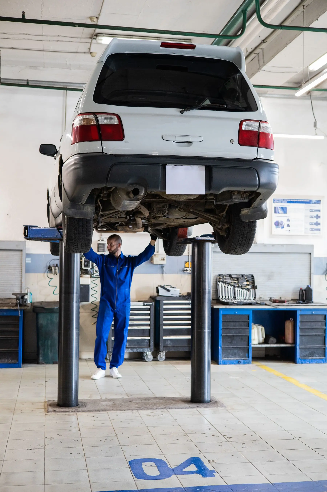
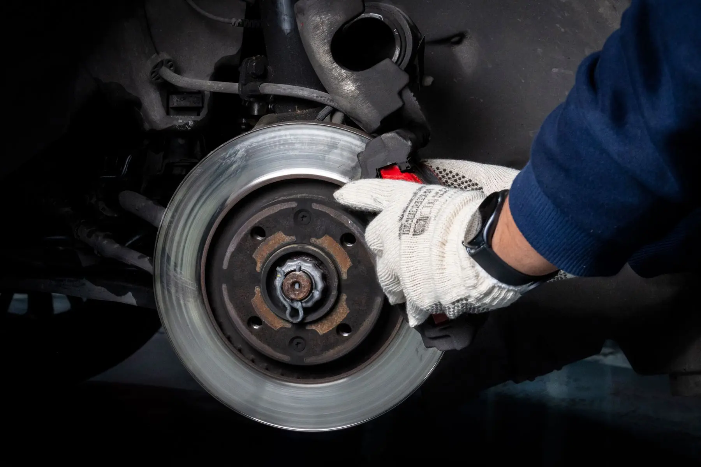
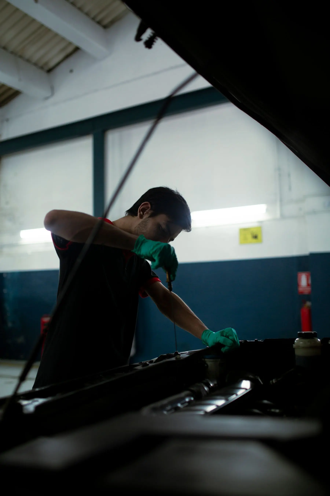

Brake Pads & Rotors
Request Brake Pads & Rotors service with the vehicle, symptoms and preferred shop.
VIEW SERVICE →
AUTO & TRUCK REPAIR · MECHANICAL / TECHNICAL
Tires 4 Less mechanic services include Brake Pads & Rotors, Oil Changes, Battery Testing & Replacement, Suspension & Steering Repair, and Shocks & Struts. Choose the location first and describe the vehicle symptoms; Wheel Alignment is handled separately at Freedom Drive.
MECHANIC SECTION
Request Brake Pads & Rotors service with the vehicle, symptoms and preferred shop.
VIEW SERVICE →Routine Oil Change requests based on the vehicle and its manufacturer maintenance guidance.
VIEW SERVICE →Battery Testing & Replacement for planned shop service. For a no-start away from the shop, use 24/7 Roadside.
VIEW SERVICE →Request Suspension & Steering Repair for noise, looseness, ride or tracking concerns.
VIEW SERVICE →Shocks & Struts service for ride-quality and related suspension concerns.
VIEW SERVICE →Wheel Alignment is currently available at Freedom Drive only, 1627 Freedom Drive in Charlotte.
VIEW SERVICE →Windshield / Auto Glass Replacement for cars, light-duty trucks and semi-trucks, in shop or mobile.
VIEW SERVICE →Windshield Chip Repair requests with vehicle, damage and in-shop or mobile preference.
VIEW SERVICE →AUTO & TRUCK SERVICE
The major service families are separated clearly, while the shop confirms which location and technician fit the specific job.
For vehicle symptoms that need inspection, diagnosis or a general repair path.
Brake noise, vibration or braking concerns can start with a brake-service request.
Routine oil and maintenance service can be requested through the shop workflow.
Truck and commercial-vehicle repair capability can vary by job, technician and location. Call to confirm.
SIGNS YOU NEED A MECHANIC
Noise, warning lights, leaks, vibration and overdue maintenance can all be reasons to get the vehicle checked. Start with the symptom and vehicle information so the shop has the right context.
REQUEST SERVICESquealing, grinding or a noticeable change in braking.
A dashboard warning or service indicator needs the right next step.
Visible fluid or an unexplained leak should be checked.
A new vibration or change in how the vehicle drives deserves attention.
Oil or routine maintenance can start with a normal shop request.
Describe the symptom instead of trying to diagnose it yourself.
HOW IT WORKS
The request collects the vehicle, symptoms and preferred location so the shop can route the concern to the right service.
Year, make, model and the main symptom or service need.
The team confirms the applicable service, location and technician availability.
Preferred timing remains a request until the shop confirms it.
REAL SHOP WORK
Brakes, oil, battery, suspension and steering concerns start with the vehicle and symptoms, then move to inspection.
VIEW OUR WORK →
BRAKES / ROTORS
OIL / MAINTENANCESERVICE BOUNDARIES
Use the vehicle, symptoms and preferred location to start the request. The shop can confirm whether the concern fits Brakes, Oil, Battery, Suspension/Steering, Shocks/Struts or another mechanic path.
Call with the vehicle and work needed so the team can confirm current capability and the appropriate location.
Use the dedicated Auto Glass path for windshield replacement or chip repair, In Shop or Mobile.
Wheel Alignment is available at Freedom Drive only. North Tryon and Concord Alignment requests route to Freedom Drive.
Body/paint work should be referred or hidden unless the business confirms it as an offered service.
SHOP SERVICE OR MOBILE HELP?
If the vehicle can safely get to the shop, use the service request. If you are stranded or cannot continue safely, start with Roadside or Towing instead.
Request the work, choose a preferred location and describe the symptom.
REQUEST SHOP SERVICEIf the vehicle cannot safely continue, use the mobile-help path instead.
AUTO & TRUCK REPAIR QUESTIONS
Quick answers about Mechanic Services, based on the current Tires 4 Less service and location rules.
Brake Pads & Rotors, Oil Changes, Battery Testing & Replacement, Suspension & Steering Repair, and Shocks & Struts are confirmed mechanic-service options.
No. Send the vehicle, symptoms and preferred location. Use Other / Not Sure if the exact service is unclear.
No. Wheel Alignment is a separate service offered at Freedom Drive only.
Auto Glass is a separate service family with windshield replacement and chip repair, including an in-shop or mobile request path.
No. The date/time is a request until the shop responds and confirms it.
TELL US WHAT IT’S DOING.
Send the vehicle, symptom, preferred location and preferred timing. The shop confirms the applicable next step.